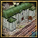
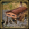
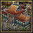
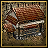
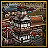
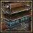
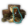

该模版为欧陆风云4百科提供各式各样的图标，使百科更具可读性。点击图标亦可进入对应页面。
一切图标版权归Paradox AB及其子公司所有，欧陆风云4百科作为第三方非营利站点合理使用相关图标，未保留授权信息的转载可能被视为侵犯版权。
参数
- 1
- 第一个参数决定显示何种图标，此为必填参数。
- 2
- 第二参数决定图标尺寸，此为可选参数。默认值为28px、顾问图标为77px、观点与叛军图标为24px、建筑图标为48px。
用法
- 格式：
{{icon|识别符}}或{{icon|识别符|尺寸}}
输入识别符显示对应图标，一切可用识别符可在下表中查阅。
- 规范：
- 图标应插入在表述事物之前，而不是之后。
- 无论与中/英文并列使用均需要在前后分别空出一个半角空格。但遇到前一个字符是中文符号或是一行开始时无需在前，只需在后空出一个半角空格。
- 举例：
获得 {{green|20}} {{icon|mil}} 军事点数→ 获得 20 军事点数
军事点数
改善模版
该模版为高流量模版，且大幅影响百科显示效果，故已进行保护。若您对该模版有任何意见或建议请在讨论页面提出。
可用图标列表
| 内容 |
|---|
|
4.1 通用 |
通用
| 扩展包 | |
|---|---|
| eu4 | |
| cop | |
| won | |
| rp | |
| aow | |
| ed, eld | |
| cs | |
| tc, cos | |
| mn | |
| rom | |
| moh | |
| tr | |
| 杂项 | |
|---|---|
| pdx | |
| yes | |
| no | |
| decision | |
| event | |
| mission | |
| policies, policy | |
| disaster | |
| time | |
| ironman | |
| achievement, achievements | |
| score | |
| 时代 | |
|---|---|
| age of discovery | |
| age of reformation | |
| age of absolutism | |
| age of revolutions | |
内政
| 国家 | |
|---|---|
| government | |
| government type | |
| change government | |
| reform progress, reform progress growth |
|
| capital, capital province |
|
| move capital cost modifier | |
| province | |
| culture | |
| primary culture | |
| culture conversion cost | |
| local culture conversion cost | |
| max promoted cultures | |
| promote culture cost | |
| prestige | |
| yearly prestige | |
| prestige decay | |
| prestige from land battles, prestige from land |
|
| prestige from naval battles, prestige from naval |
|
| prestige per development from missionary, prestige missionary |
|
| envoy travel time | |
| stability | |
| stability cost | |
| stability cost modifier | |
| unrest, national unrest, global unrest |
|
| local unrest | |
| yearly government power | (unrecognized string “yearly government power” for Template:Icon) |
| 国家 | |
|---|---|
| autonomy, national autonomy, global autonomy |
|
| local autonomy | |
| minimum autonomy | |
| minimum local autonomy | |
| minimum autonomy in territories | |
| autonomy change cooldown | |
| war exhaustion | |
| war exhaustion decrease, monthly war exhaustion |
|
| war exhaustion cost | |
| core creation cost, core-creation cost |
|
| local core creation cost, local core-creation cost |
|
| foreign core duration | |
| overextension | |
| years of separatism | |
| admin efficiency, administrative efficiency |
|
| power projection | |
| power projection from insults | |
| great power | |
| states | |
| state maintenance | |
| absolutism | |
| maximum absolutism, max absolutism |
|
| max effect of absolutism | （未识别的字符串“max effect of absolutism”用于 {{Icon}}）
|
| revolutionary zeal | |
| maximum revolutionary zeal, max revolutionary zeal |
|
| devastation | |
| local devastation | |
| prosperity | |
| global prosperity growth | |
| local prosperity growth | |
| change rival cost | |
| governing capacity | |
| governing capacity modifier | |
| province governing cost | |
| state governing cost | |
| trade company governing cost | |
| establish holy order cost | （未识别的字符串“establish holy order cost”用于 {{Icon}}）
|
| expand administration cost | （未识别的字符串“expand administration cost”用于 {{Icon}}）
|
| 政府类型 | |
|---|---|
| gov_monarchy, monarchy |
|
| gov_republic, republic |
|
| gov_theocracy, theocracy |
|
| gov_tribal, tribe |
|
| gov_native | |
| pirate republic | |
| 特殊机制 | |
| legitimacy | |
| yearly legitimacy | |
| heir chance, chance of new heir, heir claim increase |
|
| monthly heir support gain | |
| royal marriage | |
| average monarch lifespan | |
| republican tradition | |
| yearly republican tradition | |
| length of election term | |
| reelection cost | |
| random candidate bonus | |
| devotion | |
| yearly devotion | |
| parliament | |
| parliament effect duration | File:Parliament effect duration.png |
| parliament debate backing chance | File:Parliament backing chance.png |
| parliament debate duration | File:Parliament debate duration.png |
| parliament chance of decision | File:Parliament chance of decision.png |
| max possible parliament seats | （未识别的字符串“max possible parliament seats”用于 {{Icon}}）
|
| number of possible parliament issues | （未识别的字符串“number of possible parliament issues”用于 {{Icon}}）
|
| horde unity | |
| yearly horde unity | |
| razing power gain | |
| meritocracy | |
| yearly meritocracy | |
| tribal allegiance yearly tribal allegiance |
|
| tribal development growth | |
| 政府等级 | |
| empire, empire rank |
|
| kingdom, kingdom rank |
|
| duchy, duchy rank |
|
| 君主点数 | |
|---|---|
| amp, adm, administrative monarch power |
|
| dmp, dip, diplomatic monarch power |
|
| mmp, mil, military monarch power |
|
| monthly adm, monthly administrative power |
|
| monthly dip, monthly diplomatic power |
|
| monthly mil, monthly military power |
|
| all power, all power costs |
|
| mas, monarch administrative skill |
|
| mds, monarch diplomatic skill |
|
| mms, monarch military skill |
|
| 理念 | |
|---|---|
| idea, idea icon |
|
| idea unlock | |
| idea cost | |
| administrative | |
| economic | |
| expansion | |
| humanist | |
| infrastructure | |
| innovative | |
| religious | |
| court | |
| diplomatic | |
| espionage | |
| exploration | |
| influence | |
| maritime | |
| trade | |
| aristocratic, aristocracy |
|
| divine | |
| horde government | |
| indigenous | |
| plutocratic, plutocracy |
|
| defensive | |
| mercenary ideas | （未识别的字符串“mercenary ideas”用于 {{Icon}}）
|
| naval | |
| offensive | |
| quality | |
| quantity | |
| 正面统治者特质 | |
|---|---|
| architectural visionary | |
| benevolent | |
| bold fighter | |
| calm | |
| careful | |
| charismatic negotiator | |
| conqueror | |
| entrepreneur | |
| expansionist | |
| fertile | |
| fierce negotiator | |
| free thinker | |
| great engineer | （未识别的字符串“great engineer”用于 {{Icon}}）
|
| immortal | |
| iron-crowned | （未识别的字符串“iron-crowned”用于 {{Icon}}）
|
| incorruptible | |
| industrious | |
| just | |
| kind-hearted | |
| lawgiver | |
| 正面统治者特质 | |
|---|---|
| legendary conqueror | （未识别的字符串“legendary conqueror”用于 {{Icon}}）
|
| legendary pirate | |
| martial educator | |
| midas touched | |
| navigator personality | |
| papal puppeteer | File:Papal Puppeteer.png |
| patron of the arts | File:Patron of the Arts.png |
| pious | |
| protector of the little folk | File:Protector of the Little Folk.png |
| reformist | |
| righteous | |
| scholar | |
| secretive | |
| silver tongue | |
| strict | |
| tactical genius | |
| tolerant | |
| well advised | |
| well connected | |
| zealot | |
| 负面统治者特质 | |
|---|---|
| babbling buffoon | |
| craven | |
| cruel | |
| embezzler | |
| greedy | |
| indulgent | |
| infertile | |
| loose lips | |
| malevolent | |
| naive enthusiast | |
| obsessive perfectionist | |
| sinner | |
| Ruler personalities for Emperor of China | |
| humane | |
| petty | |
科技
| technology | |
| technology cost, tech cost |
|
| adm tech, administrative technology |
|
| dip tech, diplomatic technology |
|
| mil tech, military technology |
|
| adm tech cost, administrative technology cost |
|
| dip tech cost, diplomatic technology cost |
|
| mil tech cost, military technology cost |
|
| innovativeness | |
| innovativeness gain |
| 科技组 | |
|---|---|
| western | |
| eastern | |
| anatolian | |
| muslim | |
| indian | |
| chinese | |
| nomadic | |
| central african | |
| east african | |
| west african | |
| north american | |
| mesoamerican | |
| south american | |
| andean | |
| high american | |
| aboriginal | |
| polynesian | |
| 思潮 | |
|---|---|
| institution, institutions | |
| inst spread, institution spread | |
| local institution spread | |
| institution spread in true faith provinces | |
| institution growth | |
| embracement cost, institution embracement cost |
|
| feudalism | |
| renaissance | |
| colonialism | |
| printing press | |
| global trade | |
| manufactories | |
| enlightenment | |
| industrialization | |
外交
| diplomat, diplomats |
|
| diplomatic reputation | |
| diplomatic upkeep, diplomatic cap, relations cap, diplomatic relations |
|
| opinion | |
| relation, relations |
|
| improve relation modifier, improve relations |
|
| ae impact, aggressive expansion impact |
|
| alliance | |
| coalition | |
| favors | |
| monthly favor growth modifier | |
| diplomatic annexation cost | |
| enemy core creation, hostile core-creation cost on us |
|
| unjustified demands | |
| province war score cost | |
| war score cost vs other religions | |
| cost of enforcing religion through war | |
| casus belli, cb |
|
| stability hit to declare war | |
| revanchism | |
| trade league | |
| transfer trade acceptance | （未识别的字符串“transfer trade acceptance”用于 {{Icon}}）
|
| 间谍 | |
|---|---|
| foreign spy detection | |
| spy network construction | |
| covert action relation impact | |
| rebel support efficiency | |
| fabricate claims cost, cost to fabricate claims |
|
| justify trade conflict cost, cost to justify trade conflict |
|
| 附属国 | |
|---|---|
| union, personal union |
|
| vassal | |
| vassalage | |
| march | |
| client state, client |
|
| colonial nation, colonial subject |
|
| trade company | |
| appanage | |
| core eyalet | File:Icon core eyalet.png |
| eyalet | （未识别的字符串“eyalet”用于 {{Icon}}）
|
| commercial enterprise | 特许贸易公司 |
| trade protectorate | （未识别的字符串“trade protectorate”用于 {{Icon}}）
|
| tributary | |
| liberty desire | |
| liberty desire in subjects | |
| liberty desire in same continent subjects | |
| reduced liberty desire on other continent | （未识别的字符串“reduced liberty desire on other continent”用于 {{Icon}}）
|
| liberty desire from subject development, liberty desire from subjects development |
|
| vassalization acceptance | |
经济
| ducat, ducats, money, d |
|
| tax income | |
| tax | |
| base tax | |
| development | |
| development cost | |
| local development cost | |
| development cost modifier | （未识别的字符串“development cost modifier”用于 {{Icon}}）
|
| local development cost modifier | （未识别的字符串“local development cost modifier”用于 {{Icon}}）
|
| development cost in primary culture | （未识别的字符串“development cost in primary culture”用于 {{Icon}}）
|
| income | |
| expenses | |
| vassal income, income from vassals |
|
| global tax modifier, global tax efficiency national tax modifier, tax efficiency |
| local tax modifier, local tax efficiency |
|
| yearly inflation reduction, inflation, inflation reduction |
|
| reduce inflation cost, inflation reduction cost |
|
| monthly gold inflation modifier | |
| local gold depletion chance modifier | （未识别的字符串“local gold depletion chance modifier”用于 {{Icon}}）
|
| interest, annual interest, interest reduction, interest per annum |
|
| corruption | |
| yearly corruption | |
| trade company investment cost | |
| war taxes cost |
| 经济 | |
|---|---|
| production | |
| production efficiency | |
| local production efficiency | |
| goods produced modifier | |
| local goods produced | |
| local goods produced modifier | |
贸易
| merchant | |
| merchant trade power | |
| caravan power | |
| foreign trade power, trade power abroad |
|
| local trade power | |
| provincial trade power modifier, global prov trade power modifier |
|
| province trade power modifier, local trade power modifier |
|
| global trade power, trade power |
|
| domestic trade power | |
| ship trade power | |
| ship trade power modifier | （未识别的字符串“ship trade power modifier”用于 {{Icon}}）
|
| ship tradepower propagation | |
| trade value | |
| trade value modifier | |
| trade income | |
| trade range | |
| trade efficiency | |
| trade steering | |
| embargo efficiency | |
| mercantilism | |
| cost to promote mercantilism | |
| privateer efficiency | |
| cot upgrade cost, center of trade cost | |
| local center of trade upgrade cost | （未识别的字符串“local center of trade upgrade cost”用于 {{Icon}}）
|
| cot, center of trade | |
| cotlvl1 | |
| cotlvl2 | |
| cotlvl3 | |
| estuary | |
| inland |
| 商品 | |
|---|---|
| coal | |
| chinaware, china | |
| cloth | |
| cloves | |
| cocoa | |
| coffee | |
| copper | |
| cotton | |
| dyes | |
| fish | |
| fur, furs | |
| gems | |
| glass | |
| gold | |
| grain | |
| incense | |
| iron | |
| ivory | |
| 商品 | |
|---|---|
| livestock | |
| naval supplies | |
| paper | |
| salt | |
| silk | |
| slaves, slave | |
| spices, spice | |
| sugar | |
| tea | |
| tobacco | |
| tropical wood | |
| wine | |
| wool | |
| unknown | |
宗教
| 杂项 | |
|---|---|
| religious unity | |
| local religious unity contribution | |
| defender of the faith, dotf |
|
| missionary, missionaries |
|
| missionary cost, missionary maintenance cost |
|
| local missionary maintenance | |
| missionary strength, global missionary strength |
|
| missionary strength vs heathens | |
| missionary strength vs heretics | |
| local missionary strength | |
| change religion | |
| tolerance own, tolerance of the true faith |
|
| tolerance heretic, tolerance of heretics |
|
| maximum tolerance of heretics | |
| tolerance heathen, tolerance of heathens |
|
| maximum tolerance of heathens | |
| no religion penalty | |
| resistance to reformation | |
| manpower in true faith provinces | |
| opinion of heretics | |
| curia treasury contribution | |
| curia powers cost | |
| 特殊机制 | |
|---|---|
| 天主教 | |
| cardinal | |
| reform desire | |
| papal influence | |
| papal influence from cardinals | |
| appoint cardinal cost | |
| 新教、改革宗、圣公宗与胡斯派 | |
| center of reformation | |
| 新教 | |
| church power, church power modifier |
|
| 改革宗 | |
| fervor, monthly fervor |
|
| 东正教 | |
| patriarch authority | |
| yearly patriarch authority | |
| metropolitan | |
| 伊斯兰教 | |
| legalism | |
| mysticism | |
| piety, monthly piety |
|
| monthly piety accelerator | （未识别的字符串“monthly piety accelerator”用于 {{Icon}}）
|
| hanafi | |
| hanbali | |
| ismaili | |
| jafari | |
| maliki | |
| shafii, shafi'i |
|
| zaidi | |
| 儒教 | |
| yearly harmony | |
| religious harmonization speed | |
| 佛教 | |
| karma, monthly karma | |
| yearly karma decay | |
| low karma | |
| high karma | |
| 特殊机制 | |
|---|---|
| 梦创神话 | |
| ancestor story | |
| baiame story | |
| conquest story | |
| crow story | |
| dharma story | |
| djunkgao story | |
| erathipa story | |
| islam story | |
| military story | |
| moinee story | |
| rainbow story | |
| spirits story | |
| wagyl story | |
殖民
| colonist, colonists |
|
| may explore | |
| colonial range | |
| global settler increase | |
| local settler increase | |
| colonist time | |
| colony cost modifier | 殖民花费修正 |
| colonist chance, settler chance |
|
| local colonist chance, local settler chance |
|
| global tariffs | |
| native assimilation | |
| native uprising chance | |
| expel minority cost, expel minorities cost |
|
| treasure fleet income |
| 土著 | |
|---|---|
| aggressiveness | |
| ferocity | |
军事
| 单位 | |
|---|---|
| infantry | |
| cavalry | |
| artillery | |
| heavyship, heavy ship |
|
| lightship, light ship |
|
| galley | |
| transport | |
| 维护与经济 | |
|---|---|
| regiment cost | |
| local regiment cost | |
| inf cost, infantry cost |
|
| cav cost, cavalry cost |
|
| art cost, artillery cost |
|
| land maintenance, land maintenance modifier |
|
| ship cost | |
| local ship cost | |
| heavy ship cost | |
| light ship cost | |
| galley cost | |
| transport cost | |
| flagship cannons | （未识别的字符串“flagship cannons”用于 {{Icon}}）
|
| flagship cost | |
| naval maintenance, naval maintenance modifier |
|
| sailor maintenance | |
| 雇佣兵 | |
|---|---|
| mercenary manpower | |
| mercenary cost | |
| mercenary discipline | |
| merc maintenance modifier, mercenary maintenance |
|
| 军事将领 | |
|---|---|
| general | |
| conquistador | |
| admiral | |
| explorer | |
| ruler general | |
| heir general | |
| may recruit female generals | |
| leader upkeep, free leader pool leader(s) without upkeep |
|
| leader cost | |
| general cost | |
| leader fire, land leader fire |
|
| leader shock, land leader shock |
|
| leader maneuver, land leader maneuver |
|
| admiral cost | |
| naval leader fire | |
| naval leader shock | |
| naval leader maneuver | |
| leader siege, land leader siege |
|
| 杂项 | |
|---|---|
| cavalry to infantry ratio, cav_to_inf_ratio |
|
| possible manchu banners, banners |
|
| possible manchu banners (local), local banners |
|
| possible carolean infantry | File:Possible carolean infantry.png |
| possible cawa | |
| possible cawa (local) | |
| marines force limit | |
| special unit force limit | |
| rebel suppression efficiency | |
| 陆战 | |
|---|---|
| army tradition | |
| yearly army tradition | |
| army tradition decay | |
| army tradition from battles | |
| land morale, morale of armies |
|
| land morale recovery, recover army morale speed |
|
| land force limit, land forcelimit |
|
| land force limit modifier, land forcelimit modifier |
|
| vassal force limit contribution, vassal forcelimit bonus |
|
| regiment recruit speed, global regiment recruit speed, recruitment time |
|
| local recruitment time | |
| shock | |
| fire | |
| flanking range, improved flanking range |
|
| inf fire, infantry fire |
|
| cav fire, cavalry fire |
|
| art fire, artillery fire |
|
| inf shock, infantry shock |
|
| cav shock, cavalry shock |
|
| art shock, artillery shock |
|
| inf maneuver, infantry maneuver |
|
| cav maneuver, cavalry maneuver |
|
| art maneuver, artillery maneuver |
|
| inf power, infantry power, infantry combat ability |
|
| cav power, cavalry power, cavalry combat ability |
|
| art power, artillery power, artillery combat ability |
|
| reinforce cost | |
| reinforce speed | |
| siege ability | |
| discipline | |
| width, combat width |
|
| tactics, military tactics |
|
| looting speed | |
| available loot | |
| scorched earth | |
| cavalry flanking ability | |
| land fire damage | |
| fire damage received | |
| shock damage | |
| shock damage received | |
| morale damage | |
| morale damage received | |
| movement speed | |
| friendly movement speed, local friendly movement speed |
|
| hostile movement speed, local hostile movement speed |
|
| artillery damage from back row | |
| artillery bonus vs fort | |
| assault fort ability | File:Assault fort ability.png |
| army professionalism, yearly army professionalism |
|
| army drill gain modifier | |
| regiment drill loss | |
| battle map icon | |
| adaptive combat terrain | |
| own territory dice roll bonus | （未识别的字符串“own territory dice roll bonus”用于 {{Icon}}）
|
| local defender dice roll bonus | （未识别的字符串“local defender dice roll bonus”用于 {{Icon}}）
|
| 海战 | |
|---|---|
| navy tradition | |
| yearly navy tradition | |
| navy tradition decay | |
| naval tradition from battles | |
| naval tradition from protecting trade | |
| naval morale, morale of navies |
|
| naval morale damage | （未识别的字符串“naval morale damage”用于 {{Icon}}）
|
| naval morale recovery, recover navy morale speed |
|
| naval force limit, naval forcelimit |
|
| naval force limit modifier, naval forcelimit modifier |
|
| ship build speed, global ship recruit speed, shipbuilding time |
|
| local shipbuilding time | |
| cannon, cannons |
|
| ship speed, speed |
|
| ship hull, hull |
|
| naval combat bonus own coast, naval combat bonus off owned coast |
|
| heavy ship combat ability, heavy ship power |
|
| light ship combat ability, light ship power |
|
| galley combat ability, galley power |
|
| transport combat ability, transport power |
|
| ship durability | |
| global ship repair | |
| local ship repair | |
| blockade | |
| blockade efficiency | |
| blockade force required | |
| blockade impact on siege | |
| engagement width | |
| global naval engagement | |
| local naval engagement | |
| morale hit when losing a ship | |
| chance to capture enemy ships, capture ship chance |
|
| ship disengagement chance | |
| hostile disembark time | |
| 人力 | |
|---|---|
| manpower | |
| global manpower modifier, national manpower modifier |
|
| local manpower modifier, local manpower |
|
| manpower recovery speed | |
| manpower in accepted culture provinces | （未识别的字符串“manpower in accepted culture provinces”用于 {{Icon}}）
|
| manpower in primary culture provinces | （未识别的字符串“manpower in primary culture provinces”用于 {{Icon}}）
|
| manpower in same culture group provinces | （未识别的字符串“manpower in same culture group provinces”用于 {{Icon}}）
|
| 水手 | |
|---|---|
| sailors | |
| sailor increase | |
| national sailors modifier | |
| local sailors modifier | |
| sailor recovery speed | |
| 补给与损耗 | |
|---|---|
| supply, supply limit |
|
| supply limit modifier | |
| attrition | |
| max attrition maximum attrition |
|
| hostile attrition, attrition for enemies |
|
| land attrition | |
| hostile fleet attrition | （未识别的字符串“hostile fleet attrition”用于 {{Icon}}）
|
| naval attrition | |
| 要塞 | |
|---|---|
| fort level | |
| garrison growth, global garrison growth, national garrison growth |
|
| garrison size | |
| local garrison size | |
| fort defense, fort defence |
|
| local defensiveness | |
| fort maintenance, fort maintenance modifier |
|
| local fort maintenance | |
| fort maintenance on border with rival, fort maintenance rival |
|
顾问
| advisor, advisors |
|
| advisor pool, possible advisors |
|
| advisor costs, advisor cost |
|
| cost of adv wrc, cost of advisors with ruler's culture |
|
| cost of advisors with ruler's religion | |
| adm advisor cost, administrative advisor cost |
|
| dip advisor cost, diplomatic advisor cost |
|
| mil advisor cost, military advisor cost |
|
| female advisor chance |


{kind=link}
{kind=link}
{kind=link}
{kind=link}
{kind=link}
{kind=link}
{kind=link}
{kind=link}
{kind=link}
{kind=link}
{kind=link}
{kind=link}
| 军事顾问 | |
|---|---|
| army organizer | |
| army reformer | |
| commandant | 
|
| grand captain | 
|
| master recruiter | |
| military engineer | |
| quartermaster | 
|
建筑
| construction cost | |
| local construction cost | |
| construction time | |
| local construction time | |
| possible number of buildings |
| 政府 | |
|---|---|
| western_courthouse | |
| western_town_hall | |
| western_university | |
| 生产 | |
|---|---|
| western_workshop | |
| western_counting_house | |
| 税务 | |
|---|---|
| western_temple | |
| western_cathedral | |
| 贸易 | |
|---|---|
| western_marketplace | |
| western_trade_depot | |
| western_stock_exchange |  |
| 陆军 | |
|---|---|
| western_barracks | |
| western_training_fields | |
| western_regimental_camp | |
| western_conscription_center | |
| 海军 | |
|---|---|
| western_dock | |
| western_drydock | |
| western_shipyard | |
| western_grand_shipyard | |
| 要塞 | |
|---|---|
| western_fort01, fort_15th |
|
| western_fort02, fort_16th |
|
| western_fort03, fort_17th |
|
| western_fort04, fort_18th |
|
| 海军 | |
|---|---|
| coastal defence | |
| naval battery | |
| 工厂 | |
|---|---|
| farm_estate | |
| furnace | |
| mill | |
| naval_equipment | |
| plantation | |
| textile_manufactory | |
| trade_station | |
| weapons_manufactory |  |
| ramparts | |
| soldier's households | |
| impressment offices | |
| state house | |
| 政府（中华科技组） | |
|---|---|
| courthouse | |
| town_hall |  |
| university | |
| 生产（中华科技组） | |
|---|---|
| workshop |  |
| counting_house | |
| 税务（中华科技组） | |
|---|---|
| temple | |
| cathedral |  |
| 贸易（中华科技组） | |
|---|---|
| marketplace | |
| trade_depot | |
| stock_exchange |  |
派系
| 中华天朝 | |
|---|---|
| bureaucrats | |
| bureaucrats influence | |
| offices of maritime trade | （未识别的字符串“offices of maritime trade”用于 {{Icon}}）
|
| offices of maritime trade influence | （未识别的字符串“offices of maritime trade influence”用于 {{Icon}}）
|
| temples | |
| temples influence | |
| 海盗共和 | |
|---|---|
| buccaneers | |
| buccaneers influence | |
| smugglers |  |
| smugglers influence | |
| captains | |
| captains influence | |
阶层
| 阶层 | |
|---|---|
| burghers | |
| clergy | |
| nobility, nobles | |
| cossacks | |
| dhimmi | |
| tribes | |
| brahmins | |
| jains | |
| marathas | |
| rajputs | |
| vaishyas | |
| janissaries, estate_janissaries | （未识别的字符串“janissaries”用于 {{Icon}}）
|
| eunuchs, estate_eunuchs | |
| 阶层机制 | |
|---|---|
| burghers loyalty | |
| burghers influence | |
| burghers max privileges | File:Burghers max privileges.png |
| clergy loyalty | |
| clergy influence | 教士阶层影响力 |
| clergy max privileges | 教士阶层最大特权数 |
| nobility loyalty | |
| nobility influence | |
| nobility max privileges | （未识别的字符串“nobility max privileges”用于 {{Icon}}）
|
| cossacks loyalty | |
| cossacks influence | |
| cossacks max privileges | 哥萨克阶层最大特权数 |
| dhimmi loyalty | |
| dhimmi influence | |
| dhimmi max privileges | （未识别的字符串“dhimmi max privileges”用于 {{Icon}}）
|
| tribes loyalty | |
| tribes influence | |
| tribes max privileges | （未识别的字符串“tribes max privileges”用于 {{Icon}}）
|
| brahmins loyalty | |
| brahmins influence | |
| brahmins max privileges | File:Brahmins max privileges.png |
| jains loyalty | |
| jains influence | |
| jains max privileges | （未识别的字符串“jains max privileges”用于 {{Icon}}）
|
| marathas loyalty | |
| marathas influence | |
| marathas max privileges | （未识别的字符串“marathas max privileges”用于 {{Icon}}）
|
| rajputs loyalty | |
| rajputs influence | |
| rajputs max privileges | （未识别的字符串“rajputs max privileges”用于 {{Icon}}）
|
| vaishyas loyalty | |
| vaishyas influence | |
| vaishyas max privileges | （未识别的字符串“vaishyas max privileges”用于 {{Icon}}）
|
| eunuchs loyalty | （未识别的字符串“eunuchs loyalty”用于 {{Icon}}）
|
| eunuchs influence | |
| eunuchs max privileges | （未识别的字符串“eunuchs max privileges”用于 {{Icon}}）
|
| janissaries loyalty, janissary loyalty | （未识别的字符串“janissaries loyalty”用于 {{Icon}}）
|
| janissaries influence, janissary influence | （未识别的字符串“janissaries influence”用于 {{Icon}}）
|
| janissaries max privileges | （未识别的字符串“janissaries max privileges”用于 {{Icon}}）
|
{kind=link}
{kind=link}
{kind=link}
{kind=link}
{kind=link}
| 阶层机制 | |
|---|---|
| crown land | |
| estate loyalty, loyalty | |
| estate influence | |
| estate territory, territory | |
| all estates loyalty equilibrium | |
| all estates influence modifier | |
| all estates possible privileges | |
叛军
| ikko-ikkis, ikko ikkis | |
| magnates | |
| noble rebels | |
| particularists | |
| peasants | |
| pretender, pretender rebels | |
| reactionaries | |
| revolutionaries | |
| separatists | |
| cossack rebels | |
| tribal rebels |
| animist zealots | |
| catholic zealots | |
| fetishist zealots | |
| heretics, heretic rebels | |
| protestant zealots | |
| reformed zealots | |
| shia zealots | |
| sunni zealots | |
| ibadi zealots | |
| shinto zealots | |
| tengri zealots |
杂项
| 杂项 | |
|---|---|
| imperial authority | |
| imperial authority modifier | |
| ia growth modifier, imperial authority growth modifier | |
| imperial authority from free cities | |
| number of free cities | （未识别的字符串“number of free cities”用于 {{Icon}}）
|
| revolution target | |
| monthly federation favor growth | （未识别的字符串“monthly federation favor growth”用于 {{Icon}}）
|
| migration cooldown | |
| migration cost | |
| war score | |
| war | |
| militarization of state | |
| may raid coasts | |
| may raid coasts including coasts of countries with same religion | |
| eoc, emperor of china | |
| harsh treatment cost | |
| monthly splendor, splendor | |
| mandate | |
| mandate growth modifier | |
| great project upgrade cost | |
已过时的内容
| 识别符 | 图标 | 备注 |
|---|---|---|
| overseas income | obsolete with patch 1.4 | |
| local tariffs | obsolete with patch 1.4 | |
| revolt risk, global revolt risk, national revolt risk |
obsolete with patch 1.8 | |
| local revolt risk | obsolete with patch 1.8 | |
| maneuver | renamed with 1.8 | |
| merchant steering to inland, merchant steering towards inland |
obsolete with patch 1.10 | |
| vassal attitude | obsolete with patch 1.10 | |
| ottoman | renamed with patch 1.12 | |
| buddhism, buddhist |
split with patch 1.12 | |
| build power cost, building power cost |
obsolete with patch 1.12 | |
| global trade goods size, goods produced nationally |
renamed with patch 1.12 | |
| years of nationalism | renamed with patch 1.12 | |
| subject force limit contribution | renamed with patch 1.13 | |
| global trade income modifier, trade income modifier, national trade income modifier |
obsolete with patch 1.13 | |
| nomad | renamed with patch 1.14 | |
| local spy defense, local spy defence |
obsolete with patch 1.14 | |
| shamanism, shamanist |
removed with patch 1.16 | |
| global spy defense, global spy defence, national spy defense |
renamed with patch 1.16 | |
| spy offense | renamed with patch 1.16 | |
| sub-saharan | renamed with patch 1.16 | |
| fabricate claims time, time to fabricate claims |
renamed with patch 1.16 | |
| justify trade conflict time, time to justify trade conflict |
renamed with patch 1.16 | |
| accepted culture threshold | renamed with patch 1.18 | |
| global ship trade power | renamed with patch 1.18 | |
| better relations over time, relations decay |
integrated in 'improve relations' with 1.19 | |
| build cost | renamed to 'construction cost' with 1.19 | |
| local build cost | renamed to 'local construction cost' with 1.19 | |
| protectorate | merged into vassals in 1.20 | |
| goods produced | removed with 1.20 | |
| trade_company | renamed with 1.20 | |
| local movement speed | with 1.20 split in 'friendly movement speed' and 'hostile movement speed' | |
| being pious, pious | renamed to 'legalism' with 1.23 | |
| lack of piety, impious | renamed to 'mysticism' with 1.23 | |
| mandate modifier | renamed to 'mandate growth modifier' with 1.29 | |
| available mercenaries | renamed to 'mercenary manpower' with 1.30 | |
| army drill decay modifier | renamed to 'regiment drill loss' with 1.30 | |
| number of states | obsolete with patch 1.30 | |
| gov_steppe_horde, steppe horde, steppe nomads | ||
| development efficiency | removed with 1.34 |